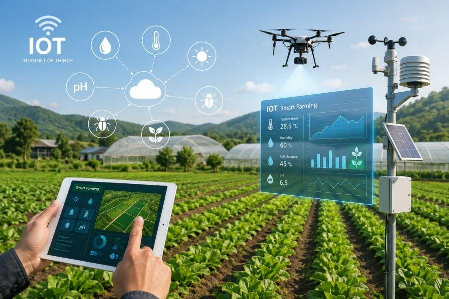
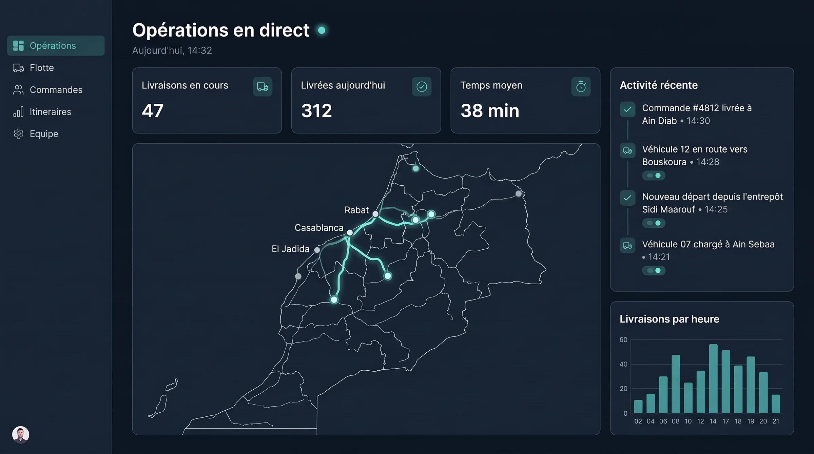
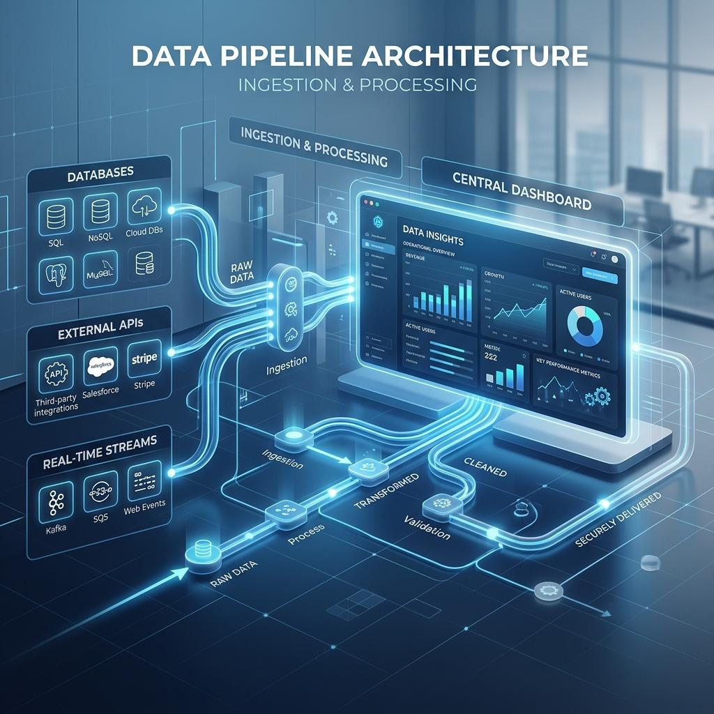
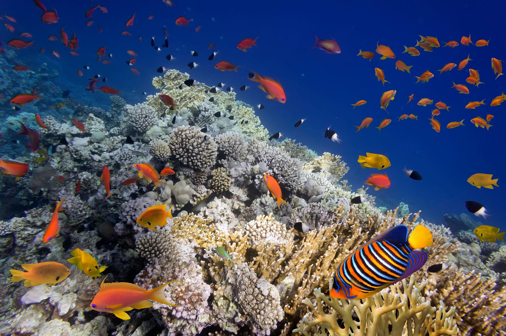

Découvrez une sélection de projets réalisés dans le cadre de mon
parcours académique, illustrant mes compétences en ingénierie des
données, analyse de données, intelligence artificielle et développement
de systèmes intelligents.

Intelligence artificielle · IoT
2026
Détection des anomalies et des attaques dans un système IoT agricole
Ce projet porte sur la conception d'une solution intelligente
destinée à renforcer la sécurité et la fiabilité d'un système
agricole connecté. L'objectif est d'analyser les données collectées
par les capteurs afin d'identifier les comportements inhabituels,
les anomalies de fonctionnement et les éventuelles cyberattaques.
Objectifs du projet
- Surveiller les données issues des capteurs agricoles.
- Identifier les anomalies dans les mesures et les comportements.
- Étudier la détection des cyberattaques dans un environnement IoT.
- Contribuer à la fiabilité et à la durabilité du système agricole.
Approche technique
Le projet s'appuie sur Python et des méthodes de Deep Learning,
notamment une architecture CNN-BiLSTM envisagée pour exploiter
les caractéristiques des données et leurs évolutions temporelles.
Les performances du modèle doivent être évaluées à partir de
données adaptées.
Projet de recherche appliquée en intelligence artificielle
et sécurité des systèmes IoT agricoles.

Data Science · Data Visualization
2025
Visualisation des données sociologiques des régions marocaines
Développement d'une plateforme dédiée à l'exploration et à la
visualisation de données sociologiques relatives aux régions du
Maroc. L'objectif est de rendre les données plus accessibles et
de faciliter la comparaison des indicateurs entre différentes
régions à travers une représentation visuelle claire.
Fonctionnalités principales
- Organisation et préparation des données sociologiques.
- Exploration des indicateurs et comparaison régionale.
- Création de graphiques pour faciliter l'interprétation.
- Présentation synthétique des résultats dans un tableau de bord.
Apport du projet
La visualisation permet de mieux comprendre la distribution
des indicateurs, d'observer les différences entre les régions
et de faciliter l'exploitation des données pour l'analyse.
Projet d'analyse et de visualisation des données à visée
exploratoire et analytique.

Data Engineering · BI
2025
Conception et alimentation d'un Data Warehouse
Ce projet consiste à concevoir un entrepôt de données permettant
de centraliser et de structurer des informations pour faciliter
leur exploitation analytique. Il met en œuvre un processus ETL
permettant d'extraire les données depuis leurs sources, de les
transformer selon les besoins et de les charger dans la structure
cible.
Étapes du projet
- Étude des sources et organisation des données.
- Conception de la structure de l'entrepôt de données.
- Extraction, transformation et chargement avec Talend.
- Création et exécution de requêtes SQL.
- Préparation des données pour le reporting et l'analyse.
Apport du projet
Cette réalisation permet de mettre en pratique les principes
de l'intégration des données, de la modélisation et de la
centralisation de l'information pour répondre aux besoins
d'analyse et d'aide à la décision.
Projet orienté intégration, structuration et exploitation
analytique des données.

Deep Learning · Computer Vision
2023
Traitement d'images aquatiques par Deep Learning
Ce projet explore l'utilisation des techniques de Deep Learning
pour analyser des images aquatiques. L'objectif est d'étudier
comment les modèles d'apprentissage profond peuvent contribuer
à la reconnaissance de motifs visuels et à la classification
d'objets présents dans des images sous-marines.
Travaux abordés
- Préparation et organisation des images.
- Prétraitement des données visuelles.
- Étude des réseaux de neurones convolutifs (CNN).
- Classification et analyse des caractéristiques visuelles.
- Évaluation des résultats du modèle.
Apport du projet
Ce travail permet d'explorer les possibilités de la vision
par ordinateur pour analyser des données visuelles complexes
et de comprendre les principales étapes du développement
d'un modèle de Deep Learning.
Projet académique consacré à l'analyse d'images et aux
techniques d'apprentissage profond.